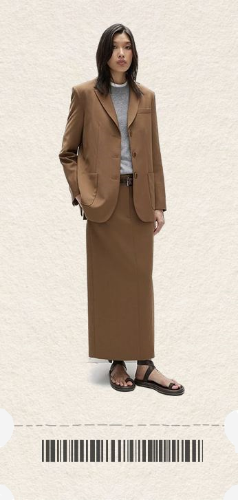
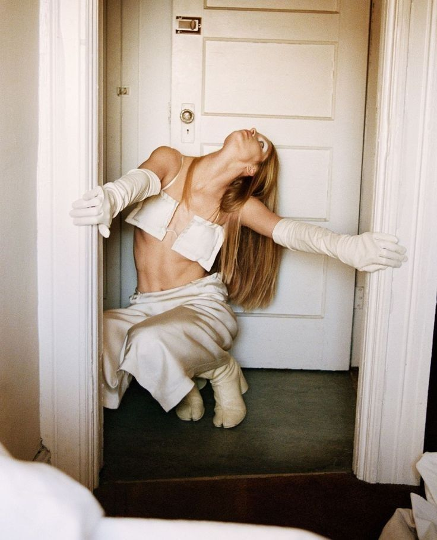
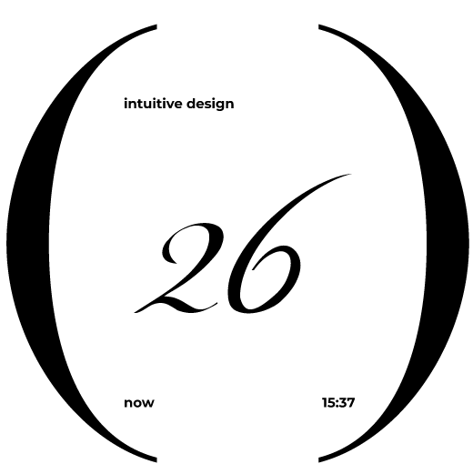
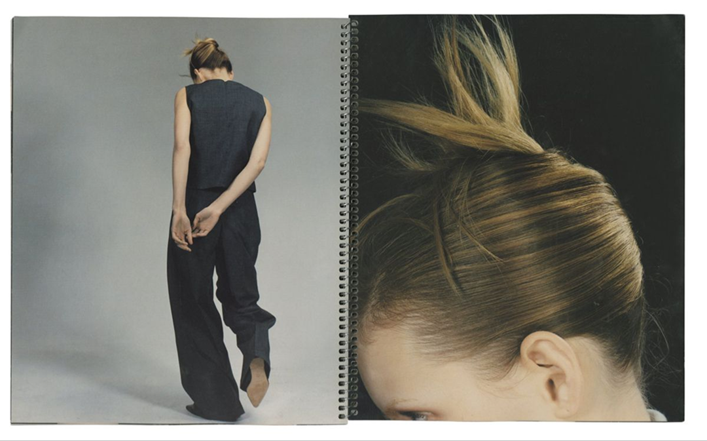

It is the bridge between creativity and practicality, where
form meets function.
Designers must consider the target audience, the purpose of
the product, and the context of use to create effective
solutions.
INTUITIVE DESIGN
May, 2025
May, 2026

This can involve using sustainable materials, optimizing production processes, and considering the product's lifecycle. Ultimately, a responsible design approach not only benefits the planet but also resonates with consumers increasingly seeking ethical choices. Sustainability is another critical aspect of contemporary design!
racticality CREATIVITY


This can involve using sustainable materials, optimizing production processes, and considering the product's lifecycle. Ultimately, a responsible design approach not only benefits the planet.
USER-CENTERED DESIGN
SUSTAINABILITY
This can involve using sustainable materials, optimizing production processes,
Ultimately, a responsible design approach not only benefits the planet but also resonates with consumers increasingly seeking ethical choices.
and considering the product's lifecycle.
Sustainability is another critical aspect of contemporary design. As environmental concerns rise, designers are called upon to create eco-friendly products that minimize waste and consumption. This can involve using sustainable materials, optimizing production processes, and considering the product!
FUNCTIONALITY
In the modern world, user-centered design has gained immense popularity. This approach prioritizes the needs and preferences of the end-user throughout the design process. By conducting thorough research and testing, designers can ensure their creations are not only visually appealing but also intuitive and easy to use.
AESTHETICS
Design is not merely about aesthetics; it encompasses functionality, usability, and emotional connection.

SUSTAINABILITY
This can involve using sustainable materials, optimizing production processes, and considering the product's lifecycle.
Ultimately, a responsible design approach not only benefits the planet but also resonates with consumers increasingly seeking ethical choices.

SUSTAINABILITY IS ANOTHER CRITICAL ASPECT OF CONTEMPORARY DESIGN?

Ultimately, a responsible design approach not only benefits but also resonates.
intuitive design
soon
20 — 09
eco-friendly products
now
15:37
.png)
.png)
.png)
.png)
In the modern world, user-centered design has gained immense popularity.
This approach prioritizes the need and preferences of the enduser through the design process.
Design solutions
Design is not merely about aesthetics; it encompasses functionality, usability, and emotional connection.
User-centered design
It is the bridge between creativity and practicality, where form meets function. Designers must consider the target audience, the purpose of the product, and the context of use to create effective solutions.
A well-thought-out design can transform a mundane object into a captivating experience.
INTUITIVE DESIGN
As environmental concerns rise, designers are called upon to create eco-friendly products that minimize waste and consumption.
